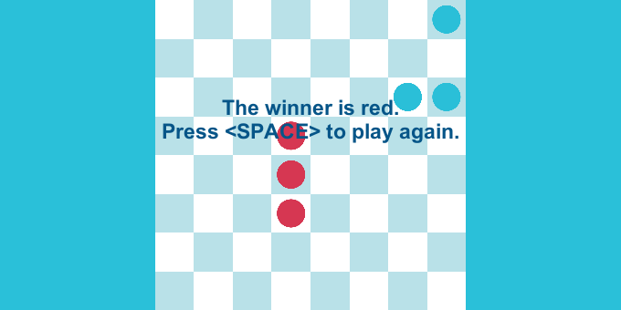

Displaying an End Game Message

To display a message when the game ends, you need to add a few lines of code to the game script that you are using. In this example, ShowGameOverMessageGame. Essentially, you add an event handler to the OnGameOver event that displays a message depending on the configuration.

Here is how the code looks:
if (showWinnerID)
{
manager.OnGameOver += OnGameOver;
}
else
{
if (customText == string.Empty)
{
customText = "Game Over!\nPress Space to restart";
}
manager.OnGameOver += () => ShowMessage(customText);
}
The field manager.OnGameOver is an event that fires when the game ends.
The two methods used are these:
private void OnGameOver()
{
var winner = manager.Winners.First();
ShowMessage($"The winner is {winner.PlayerID}. \nPress <SPACE> to play again.");
}
private void ShowMessage(string message)
{
text.gameObject.SetActive(true);
text.text = message;
}
The rules of this game are the same as the Victory Conditions examples.